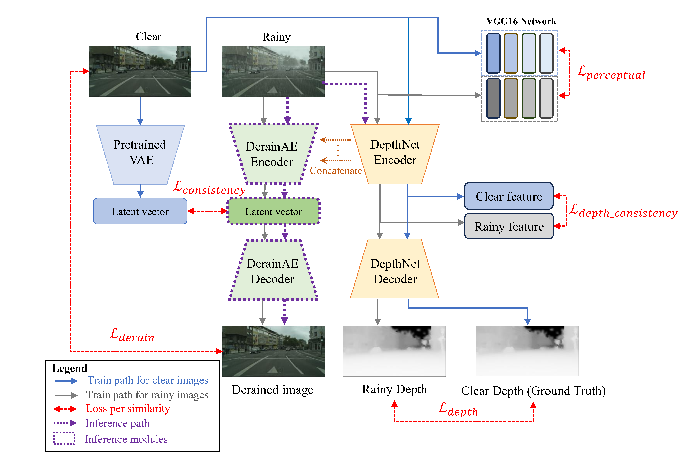

01.1 / Image restoration
Recovering useful visual information
Geometry and depth cues for robust image deraining, alongside ongoing research into restoration across weather and lighting conditions.
My contribution
Led software, formal analysis, data curation, and original drafting for the published deraining study, with shared methodological contributions.